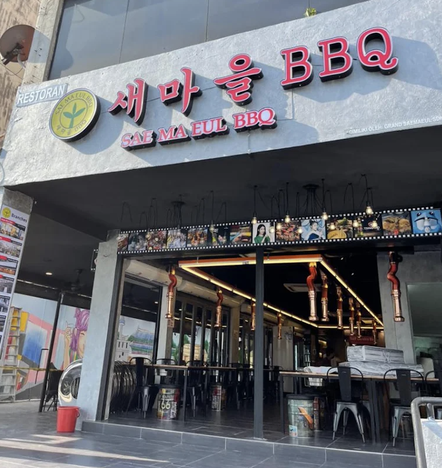

Sae Ma Eul BBQ
Cuisine: Korean BBQ
Price range: RM 25–40 per person
Signature Dishes
- Dwaeji Yangnyeom Galbi (spicy marinated pork ribs) — RM 32
- Spicy Pork Belly — RM 28
- Seafood Pancake — RM 22
- Steamed Egg — RM 12
Reservation deposit: RM 20
A lively Korean BBQ restaurant in SS15 known for its charcoal-grilled meats and generous all-you-can-eat style sets. The smoky aroma and sizzling grills create a casual, social atmosphere perfect for groups. Popular with students and families, Sae Ma Eul offers marinated pork ribs, spicy pork belly, and classic Korean sides. Expect a busy, energetic dining room and come hungry — portions are generous.
Reserve a Table